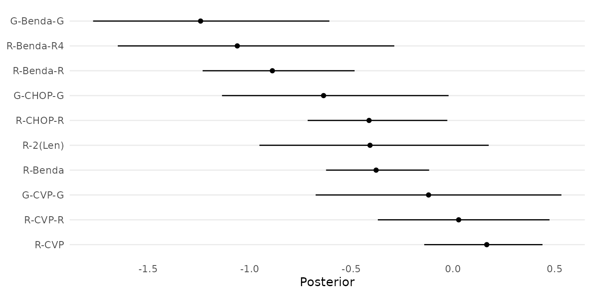
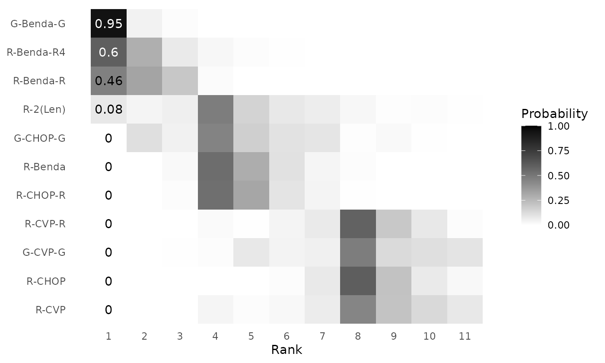
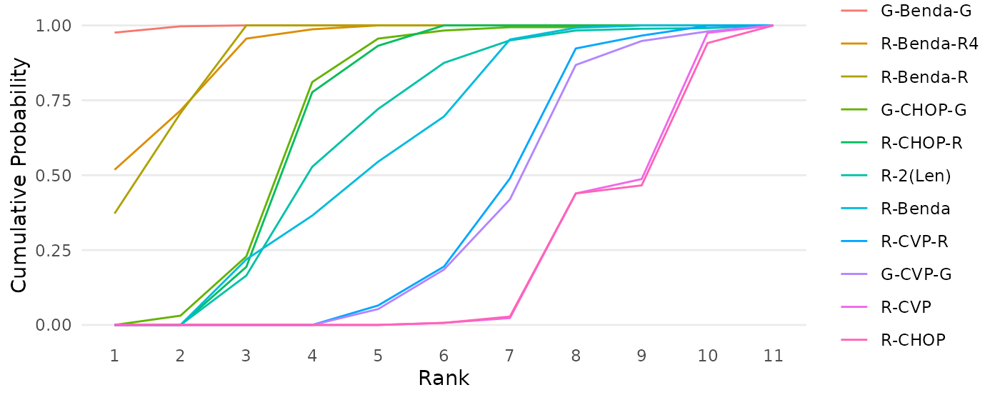
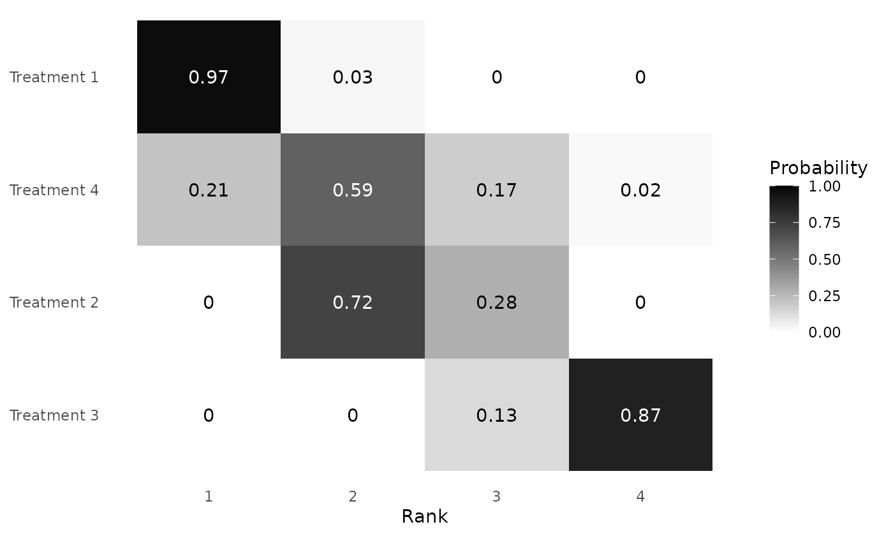
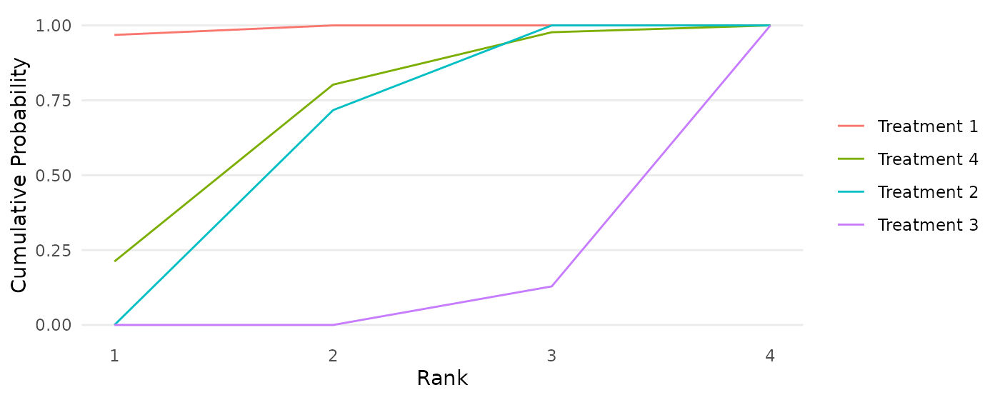
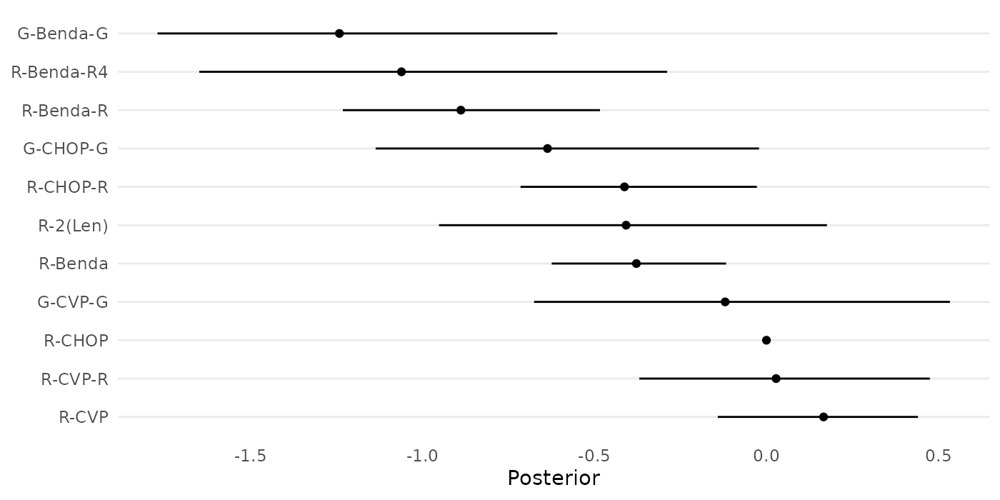
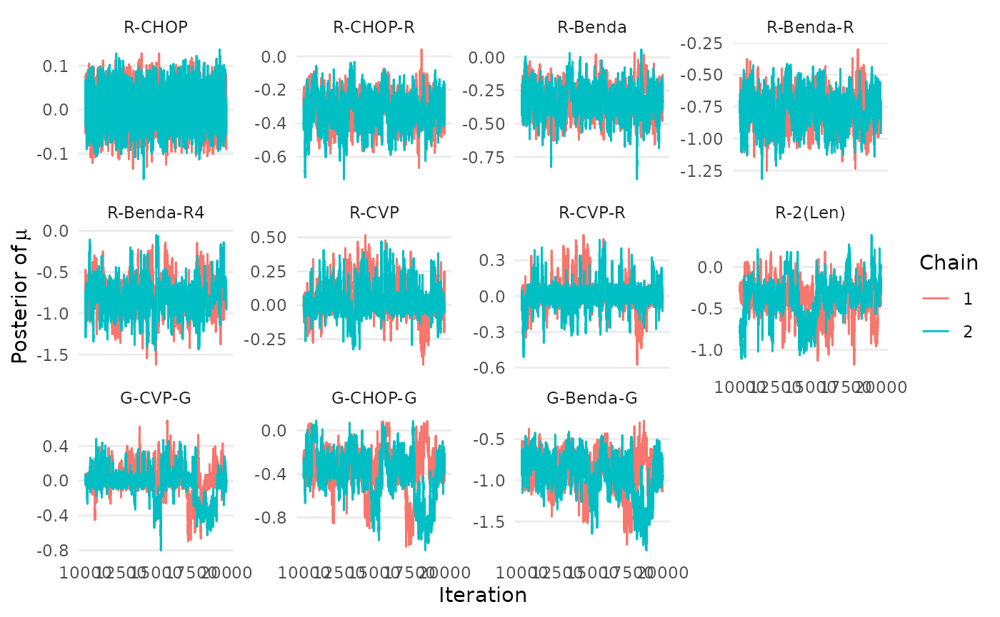
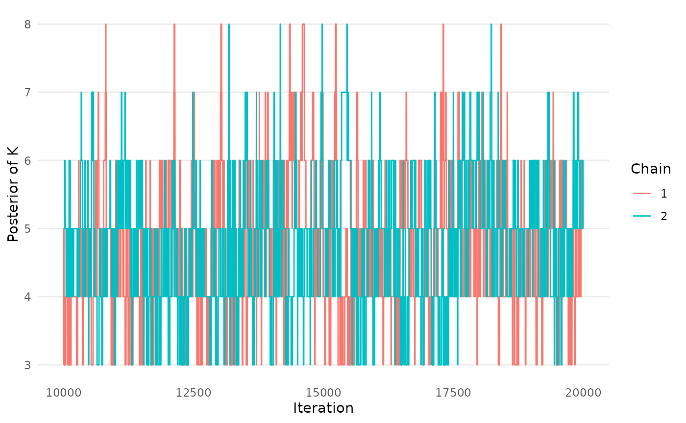
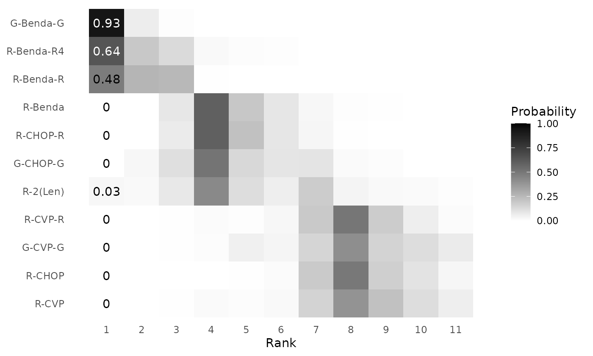
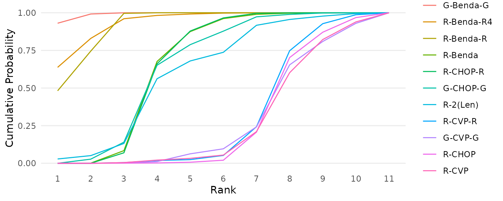

In this vignette, we provide a detailed tutorial of the key
functionalities of the RaCE.NMA R package. The package has
functions to complete three primary tasks in the analysis pipeline when
utilizing the RaCE-NMA methodology:
After loading the necessary packages to run our analyses, we demonstrate each of the primary tasks in the analysis pipeline on two datasets: A toy dataset (as seen in Simulation Study 2 of the paper) and real data (as seen in the Case Study of the paper).
First, we use a “toy” dataset that can be seen in Simulation Study 2
of the paper. The data is included in the RaCE.NMA package
and can be loaded using the following code:
data("toy_data")
head(toy_data)
#> V1 V2 V3 V4
#> 1 -1.0896915 0.018484918 1.158785 -1.1303757
#> 2 -1.0080252 0.013242028 1.070795 -0.2396980
#> 3 -0.8015526 -0.013878701 1.041765 0.9817528
#> 4 -1.0392695 -0.103966898 1.178223 -2.3110691
#> 5 -0.9121395 0.003580672 1.101283 0.4322652
#> 6 -0.7909181 -0.119992582 1.158964 1.9546516The data contains rows and 4 columns. Each column represented a treatment, and each row a posterior draw of relative treatment effects for those treatments. We assume these posterior draws are based on a standard NMA model (i.e., no rank-clustering).
To visualize these posterior draws, we create a forest plot (with 95%
CIs) via the aptly-named create_forestplot function:
create_forestplot(data = toy_data, limits = 0.95,
order_by_average = FALSE)
We observe that the first three treatments have narrow and well-separated credible intervals of relative efficacy. The fourth treatment, however, has a very wide interval to indicate high uncertainty in its relative efficacy.
Now we are ready to start the analysis pipeline.
The RaCE.NMA packages contains a primary model-fitting
function, mcmc_RCMVN. The function requires many inputs,
which may be broken down into three categories:
If available, we recommend inputting the full posterior of the
relative treatment effect from a previous NMA analysis into the
mcmc_RCMVN function. In this case, the
posterior argument should be provided an
matrix, where the (i,j) entry indicates the relative treatment effect of
treatment
in MCMC draw
.
An example of this functionality is provided below:
mcmc_RCMVN(posterior = toy_data)In the above code, default settings are used for all other inputs. (We recommend against this practice.)
Alternatively, one may provide summary statistics of the model posterior (instead of a full posterior itself). This is useful when applying the RaCE-NMA methodology to the results of a published paper post-hoc, when only summary statistics are available. In this setting, the user must provide two inputs:
ybar: A vector of length
(the number of treatments), where the
th
entry displays the average relative treatment effect of treatment
cov or s: A
covariance matrix of relative treatment effects or a vector of
length
of treatment-specific standard deviations of relative treatment
effects.An example of this functionality is provided below:
mcmc_RCMVN(ybar = ybar_toy, cov = cov_toy) # example with ybar and cov
mcmc_RCMVN(ybar = ybar_toy, s = s_toy ) # example with ybar and sIf duplicative inputs are provided, the function will always use those provided the “richest” information. Specifically,
posterior is provided, ybar,
cov, and/or s will be ignored.cov is provided, s is ignored.Next, we may specify the following hyperparameters:
mu0: The prior mean on the rank-clustered relative
treatment effects. Defaults to mean(ybar), which aims to be
vague.sigma0: The prior standard deviation on the
rank-clustered relative treatment effects. Defaults to
sqrt(10*var(ybar)), which aims to be vague.The following code demonstrates how one could specify these hyperparameters directly in the estimation function:
mcmc_RCMVN(
posterior = toy_data, # results of a standard NMA model
mu0 = mean(ybar_toy), sigma0 = sqrt(10*var(ybar_toy)), # model hyperparameters
)Last, we may specify parameters that control how the MCMC chains are run:
tau: The standard deviation of the Metropolis Hastings
proposal distribution. Defaults to
min(|ybar_i-ybar_j|).nu0: How cluster-specific mean parameters are
initialized. Defaults to NULL, which randomly samples from
the prior distribution.num_iters: The number of times the rank-clustering
structure is sampled in each MCMC chain. Defaults to
.nu_reps: The number of times each cluster-specific mean
is sampled per sampling of the rank-clustering structure. Defaults to
.
In total, there will be
num_itersnu_reps
samples from the posterior.chains: The number of independent MCMC chains. Defaults
to 2.burn_prop: The proportion of MCMC samples in each chain
to be removed as burn-in. Defaults to 0.5.thin: A number indicating how often to thin samples.
Defaults to 1, indicating no thinning.seed: The random seed to run chains. Defaults to
NULL, meaning the environment seed is inherited.The following code demonstrates how one could specify some of these settings directly in the estimation function:
mcmc_results_toy <- mcmc_RCMVN(
posterior = toy_data, # results of a standard NMA model
mu0 = mean(ybar_toy), sigma0 = sqrt(10*var(ybar_toy)), # model hyperparameters
num_iters = 10000, nu_reps = 2, # MCMC settings
chains = 2, burn_prop = 0.5, thin = 1, seed = 1
)
#> [1] "Estimating chain 1 of 2."
#> [1] "Estimating chain 2 of 2."The package contains three functions to assess if the MCMC chains
have converged and mixed. The first two produce trace plots of
mu and K, the primary model parameters. The
third calculates the
statistic for each mu parameter. We display and interpret
each plot below.
createtrace_mu(mcmc_results_toy)
We observe acceptable mixing and convergence in the trace plots for . Ideally, the two chains would like similar to each other, with each exhibiting a “white noise pattern”. This is certainly true for , , and . For , we notice some “jumps” in value across iterations. Based on our toy data, in which treatment 4 has extremely high uncertainty, we expect this type of behavior. Furthermore, since the chains both exhibit similar patterns, we are satisfied.
createtrace_K(mcmc_results_toy)
We again observe acceptable mixing and convergence in the trace plot for . That is, the two chains are indistinguishable and exhibit a seemingly random pattern between the values and .
calculate_Rhat(mcmc_results_toy, confidence = 0.9)
#> Potential scale reduction factors:
#>
#> Point est. Upper C.I.
#> mu1 1.00 1.00
#> mu2 1.00 1.00
#> mu3 1.00 1.01
#> mu4 1.03 1.10The statistic is a standard convergence diagnostic statistic used to assess MCMC chains. A standard rule of thumb is to ensure that . We see that the point estimate and 90% confidence intervals for all parameters are , indicating acceptable convergence.
The package contains three functions to visualize model results. We demonstrate each in turn:
The first is to create a clustering probability matrix. In the
figure, each row represents a treatment and each column a rank level.
The color of the corresponding cell is the estimated posterior
probability that a treatment belongs to a specific rank. Note that the
label_ranks input allows the user to specify which rank
levels in the graphic are labeled with a numerical probability
(corresponding to the color shown). See the figure and corresponding
interpretation below.
create_clustermatrix(mcmc=mcmc_results_toy,
label_ranks = 1:4)
The model estimates a 0.97 probability that Treatment 1 is in first place. Simultaneously, the model estimates a 0.21 probability that Treatment 4 is in first place. Thus, there is some probability, based on the model, that Treatments 1 and 4 are simultaneously the “best” treatments. That being said, Treatment 4 has substantial uncertainty in its rank, which aligns with the high uncertainty in original relative treatment effect data. Treatment 2 has a 0.72 probability of being in second place and Treatment 4 has a 0.87 probability of being in fourth (last) place.
The second function creates a cumulative ranking probability curve for each treatment. In words, the plot displays the probability that each treatment is at least in a specific rank place. For example, we see that Treatment 4 has a 0.80 probability of being in first or second place.
create_cumulativeranking(mcmc=mcmc_results_toy)
The third function creates a table displaying the SUCRA value and the
Median Number of Better Treatments (MNBT) for each treatment (with a
corresponding credible interval). The credible level may be specified
using the credible argument.
calculate_SUCRA_MNBT(mcmc=mcmc_results_toy, credible = 0.5)
#> Treatment SUCRA MNBT (50% CI)
#> 1 1 0.98941667 0 (0, 0)
#> 2 4 0.66381667 1 (1, 1)
#> 3 2 0.57240000 1 (1, 2)
#> 4 3 0.04293333 3 (3, 3)Next, we demonstrate the package on a real NMA study provided by Wang
et. al (2022) and analyzed as a Case Study in our paper. The data is
included in the RaCE.NMA package and can be loaded using
the following code:
data("wang_posterior")
head(wang_posterior)
#> R-CHOP-R R-Benda R-Benda-R R-Benda-R4 R-CVP R-CVP-R R-2(Len)
#> 1 -0.4711188 -0.3783300 -0.9862301 -1.619193 0.3206447 0.12632840 -0.3138701
#> 2 -0.4248054 -0.4265043 -1.0598369 -1.454095 0.2244113 0.01871014 -0.3899421
#> 3 -0.3775619 -0.4694452 -0.9866381 -1.267246 0.3776061 0.24043637 -0.2453396
#> 4 -0.5138314 -0.4040540 -1.0063014 -1.423337 0.2161720 -0.02002774 -0.5677317
#> 5 -0.4872747 -0.2886939 -0.8230394 -1.017027 0.2229437 -0.05790896 -0.4187176
#> 6 -0.3216286 -0.3649380 -0.7690168 -1.227404 0.2818887 0.27643867 -0.2829749
#> G-CVP-G G-CHOP-G G-Benda-G
#> 1 -0.10701641 -0.6979653 -1.294057
#> 2 -0.16624487 -0.5717649 -1.432865
#> 3 0.12289764 -0.4154261 -1.241868
#> 4 0.19159024 -0.6859625 -1.288299
#> 5 -0.25061236 -0.6099303 -1.157254
#> 6 0.08449136 -0.5813818 -1.090934It is important to note that wang_posterior only
includes relative treatment effects for non-baseline treatments. An 11th
treatment, “R-CHOP”, was the baseline with a relative treatment effect
of 0 by construction. Thus, for technical reasons described in the
paper, we will need to define summary statistics that can be used when
fitting the RaCE-NMA model.
# define assumed mean and variance for baseline treatment (R-CHOP)
ybar_baseline <- 0
var_baseline <- min(apply(wang_posterior,2,var))/10
# calculate summary statistics, ybar and cov
ybar_wang <- c( ybar_baseline, apply(wang_posterior,2,mean) )
cov_wang <- cbind( c(var_baseline, rep(0, 10) ),
rbind(0, cov(wang_posterior)) )
# store treatment names
treatments <- c("R-CHOP", names(wang_posterior))The following forest plot displays the relative treatment effects of the 11 treatments in the study, as estimated by Wang et. al (2022).
create_forestplot(data = cbind(0,wang_posterior),
names = treatments)
Now, we proceed through the analysis pipeline.
We fit the model below using 2 chains, each with MCMC iterations.
mcmc_results_casestudy <- mcmc_RCMVN(
ybar = ybar_wang, cov = cov_wang,
num_iters = 10000, nu_reps = 2, chains = 2, seed = 1
)
#> [1] "Estimating chain 1 of 2."
#> [1] "Estimating chain 2 of 2."Next, we view trace plots and convergence diagnostics.
createtrace_mu(mcmc_results_casestudy, names=treatments)
createtrace_K(mcmc_results_casestudy)
calculate_Rhat(mcmc_results_casestudy, names=treatments)
#> Potential scale reduction factors:
#>
#> Point est. Upper C.I.
#> R-CHOP 1.00 1.01
#> R-CHOP-R 1.01 1.06
#> R-Benda 1.02 1.09
#> R-Benda-R 1.00 1.02
#> R-Benda-R4 1.00 1.00
#> R-CVP 1.08 1.30
#> R-CVP-R 1.09 1.32
#> R-2(Len) 1.16 1.55
#> G-CVP-G 1.08 1.31
#> G-CHOP-G 1.19 1.65
#> G-Benda-G 1.16 1.55We observe that chains have not run long enough (refer to the Reproducibility tab for a longer run of chains). However, for demonstration purposes we continue with the next stage of the analysis pipeline below.
Disclaimer: The results below are based on chains which have not converged, but are shown for demonstration purposes. Please see the Reproducibility tab for accurate results based on this data.
create_clustermatrix(mcmc=mcmc_results_casestudy, names = treatments, label_ranks = 1)
create_cumulativeranking(mcmc=mcmc_results_casestudy, names=treatments)
calculate_SUCRA_MNBT(mcmc=mcmc_results_casestudy,names=treatments)
#> Treatment SUCRA MNBT (50% CI)
#> 1 G-Benda-G 0.993630 0 (0, 0)
#> 2 R-Benda-R4 0.942055 0 (0, 1)
#> 3 R-Benda-R 0.924070 1 (0, 1)
#> 4 R-2(Len) 0.663695 3 (3, 4)
#> 5 G-CHOP-G 0.648690 3 (3, 4)
#> 6 R-Benda 0.637975 3 (3, 4)
#> 7 R-CHOP-R 0.636165 3 (3, 4)
#> 8 R-CVP-R 0.284175 7 (7, 8)
#> 9 G-CVP-G 0.279990 7 (7, 8)
#> 10 R-CHOP 0.266110 7 (7, 8)
#> 11 R-CVP 0.255875 7 (7, 8)